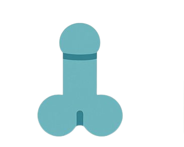
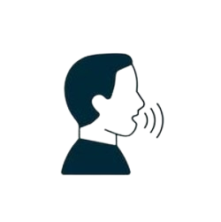
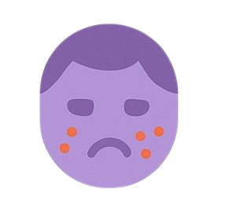

Na puberdade, os meninos também encaram um monte de novidades. Tudo guiado pela testosterona, o hormônio que entra em cena com força total.
As mudanças mais comuns:
Pênis e testículos crescendo: É um dos primeiros sinais.
Pelos pra todo lado: Primeiro surgem na região íntima e axilas, depois nas pernas, braços e buço (aquele comecinho de bigode). Aos poucos, vem barba e bigode de verdade. Ou seja, tudo tem seu tempo, não precisa se desesperar achando que seu bigode vai ficar fino. Calma lá, jovem!
Voz mudando: A laringe cresce, a voz engrossa mas antes fica toda “falhando”. Meio constrangedor, mas é passageiro.
Ombros mais largos e músculos aparecendo: O corpo todo fica com "cara de homem."
 Mais espinhas: Oleosidade na pele aumenta, e os cravos e espinhas também. Não é só com as meninas que isso acontece, meninos jovens também são bem propícios a terem espinhas.
Ereções espontâneas e poluções noturnas: Quem nunca se assustou ao acordar e ver o pênis ereto? Ou ficou sem entender porque isso acontece? É só o corpo testando o sistema reprodutor. Faz parte do crescimento.
Cada menino vive seu ritmo. Não tem regra, nem idade exata. Seu corpo vai seguir o próprio cronômetro, e tá tudo bem.